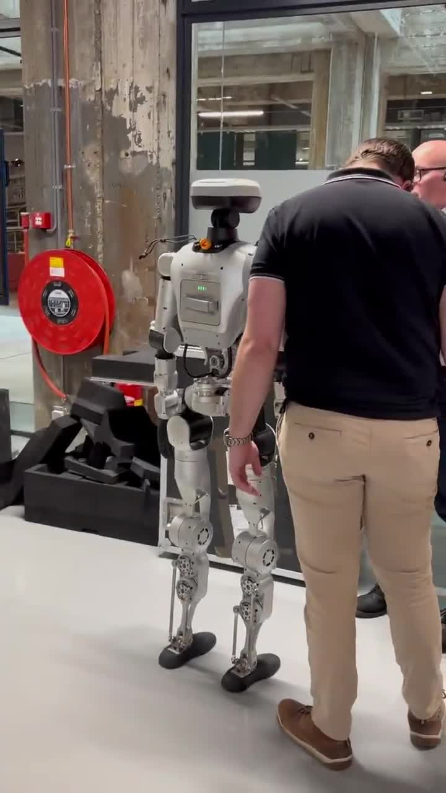

Learning robot manipulation from examples
A compact Vision‑Language‑Action model controls a low-cost SO‑101 arm from camera observations, robot state, and a natural-language task.

A reusable robot-learning loop
Teleoperate
Record demonstrations with cameras, joint states and actions in LeRobot format.
Fine‑tune SmolVLA
Learn action chunks conditioned on images, robot state and language instructions.
Run on robot
Execute the learned policy live on SO‑101 and evaluate robustness.
Focus: data-efficient manipulation, reproducible evaluation, and a pipeline that can scale to harder VBTI robot tasks.
Manual robot programming is slow and brittle when tasks or objects change.
Foundation robot policies promise faster adaptation from demonstrations.
We need practical evidence: what works on a real, affordable arm today?
Small arm, real cameras, live policy demo

Walking is provided — real work starts at task intelligence
The LimX robot already comes with a pre-trained locomotion policy. We can use that as a low-level walking controller, while building domain-specific models for manipulation, perception and high-level task execution.
Pre-trained walking
Stable locomotion policy handles balance and movement.
Task planner
Decide where to move, what to inspect, and which skill to run.
Domain models
Train policies for real actions: handling tools, objects, plants, machines and site-specific workflows.